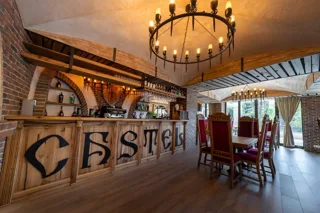
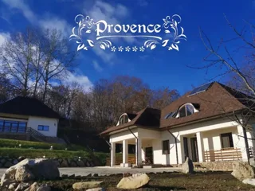
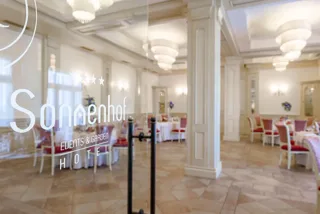
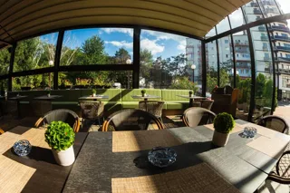
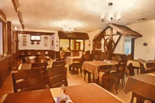
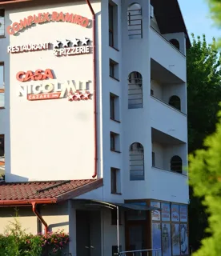
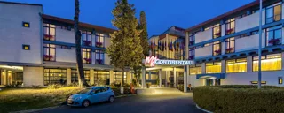
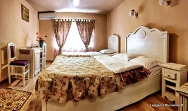
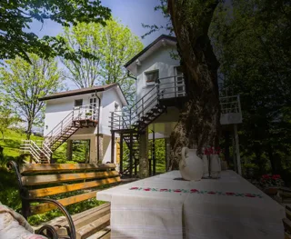
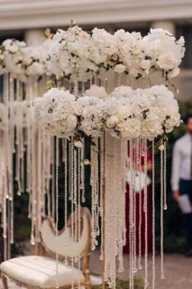

Locații de nuntă în Suceava
- locații în director
- 10
- cu cazare în registrul SITUR
- 7
- medie ponderată Google
- 4,4 / 5
- evaluări Google
- 13.816
Cum alegi o locație în Suceava
În Suceava poți începe comparația cu Hotel & Restaurant Castel Suceava (hotel), Provence (hotel), Sonnenhof (hotel). Aceste proprietăți apar în primele poziții când luăm în calcul împreună nota și numărul de evaluări Google. Salvează adresele care vă interesează pentru a le așeza apoi alături în fișa de comparare a ofertelor.
Pentru partea de afară, avem o descriere a spațiului folosit la evenimente la Leaganul Bucovinei — Petreceri pentru copii în grădină. La vizionare, cere schița pentru numărul vostru de persoane, inclusiv locul unde vor sta muzicienii și pe unde intră invitații.
Dacă vin rude de departe, Provence are o unitate de cazare asociată în registrul SITUR. Înregistrarea pentru Provence cuprinde 17 locuri de dormit în 9 spații de cazare. Întreabă câte camere pot fi păstrate pentru aceeași noapte înainte să trimiți invitaților detaliile de rezervare.
Dacă vrei să vezi două proprietăți în aceeași zi, poți continua de la Leaganul Bucovinei spre Bucovina Easy Stay din Sfântu Ilie. Punctele lor sunt la 0,9 km în linie dreaptă. Deschide traseul înainte să fixezi ora celei de-a doua vizite, mai ales dacă grupul se deplasează cu autocarul.
Locații pentru vizionare
Ordinea ține cont de nota Google și de numărul evaluărilor. Cum calculăm ordinea

Fotografie a locației · Sursa fotografiei Suceava · Hotel
Hotel & Restaurant Castel Suceava
Hotel în stil de castel pe Aleea Cetății din Suceava, cu nota 4,8 și spa. Bucătăria primește critici în 2026, deci cere degustare înainte de eveniment.
Aleea Cetății, 727541 Suceava+40 756 124 902
Fotografie a locației · Sursa fotografiei Suceava · Hotel
Provence
La Provence, un vizitator vorbește despre liniștea găsită departe de agitația orașului și despre verdeața din jurul pensiunii.
Strada Cernăuți 75A, 727525 Suceava+40 742 490 025
Fotografie a locației · Sursa fotografiei Suceava · Hotel
Sonnenhof
Un client care a revenit la Sonnenhof în Suceava vorbește despre deserturile restaurantului și despre numeroasele locuri de parcare pe care le-a observat.
Bulevardul Sofia Vicoveanca 68, 720285 Suceava+40 230 220 033
Fotografie a locației · Sursa fotografiei Suceava · Hotel
Balada
Hotel din centrul Sucevei listat ca sală de nunți, cu parcare încăpătoare și restaurant lăudat, dar recenzii critice despre camere.
Strada Mitropoliei 3-5, 720035 Suceava+40 330 100 026
Fotografie a locației · Sursa fotografiei Suceava · Pensiune
Casa Bucovineană
Pensiune cu restaurant tradițional pe strada Petru Rareș din Suceava: papanași lăudați, dar și recenzii despre așteptări lungi.
Strada Petru Rareș 57B, 727525 Suceava+40 744 211 833
Fotografie a locației · Sursa fotografiei Suceava · Restaurant
COMPLEX RAMIRO
Restaurant cu salon de 150 de locuri, hotel cu piscină și spa în Suceava. Recenzii împărțite despre bucătărie; cere o degustare înainte.
Strada Gheorghe Doja 140e, 720169 Suceava+40 756 100 580
Fotografie a locației · Sursa fotografiei Suceava · Hotel
Hotel MyContinental Suceava
Hotel MyContinental Suceava, Suceava. Un oaspete de la MyContinental Suceava laudă diversitatea mâncării și liniștea proprietății la șederea sa.
Strada Mihai Viteazul 4, 720057 Suceava+40 372 304 904
Fotografie a locației · Sursa fotografiei Suceava · Pensiune
Leaganul Bucovinei
Leaganul Bucovinei, Suceava. E un detaliu bun pentru părinții care vor camera aproape de activitățile copiilor.
Bulevardul Sofia Vicoveanca Nr. 18, 720284 Suceava+40 740 828 888
Fotografie a locației · Sursa fotografiei Suceava · Pensiune
Pensiunea Rapsodia
Pensiunea Rapsodia. Dacă printre invitați se află familii care călătoresc cu animale, aflați regulile aplicabile camerei, terasei și locului de luat masa.
Strada Luca Arbore 18, 720028 Suceava+40 744 535 354
Fotografie a locației · Sursa fotografiei Suceava · Hotel
Hotel Bucovina
Hotel central în Suceava cu sală de evenimente și pachet de nuntă de la 260 RON; 4,1 din 1.861 de evaluări. Întreabă de băutură.
Strada Ana Ipătescu 5, 720026 Suceava+40 748 143 447
Întrebări despre locațiile din Suceava
Unde pot dormi invitații în Suceava?
În registrul de cazare SITUR găsim Provence (17 locuri de cazare), Balada (140 de locuri de cazare), Casa Bucovineană (20 de locuri de cazare). Verifică ce camere sunt libere pentru noaptea evenimentului.
Ce spații sunt documentate pentru evenimente în aer liber în Suceava?
Leaganul Bucovinei — Petreceri pentru copii în grădină.
Care locație din Suceava are cele mai multe evaluări Google?
COMPLEX RAMIRO are 3.396 de evaluări în profilul Google folosit la documentare. Evaluările acoperă și alte experiențe la proprietate, inclusiv vizitele fără eveniment.
Unde apare o intrare accesibilă în Suceava?
Profilurile Google indică o intrare accesibilă la COMPLEX RAMIRO. Pentru o cununie în exterior, cere detalii despre traseul dintre intrare și zona cu scaune.
Ce alte localități pot include într-o vizionare lângă Suceava?
Cele mai apropiate adrese comparate pe hartă sunt în Sfântu Ilie, Șcheia, Lisaura. Găsești mai jos distanțele dintre proprietățile folosite pentru această comparație.
Vizionări în apropiere
- Sfântu Ilie · 1 locație. Între Leaganul Bucovinei și Bucovina Easy Stay sunt 0,9 km în linie dreaptă.
- Șcheia · 6 locații. Între Provence și Conacul Domnesc sunt 1,5 km în linie dreaptă.
- Lisaura · 1 locație. Între Hotel & Restaurant Castel Suceava și Agropensiunea Ioana sunt 1,7 km în linie dreaptă.